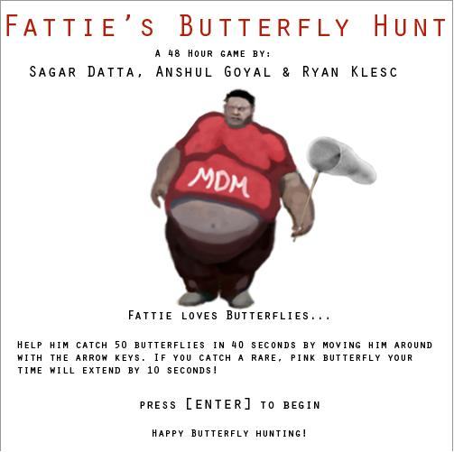
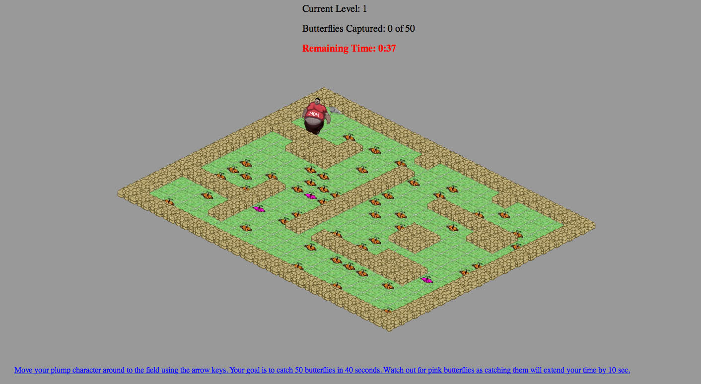
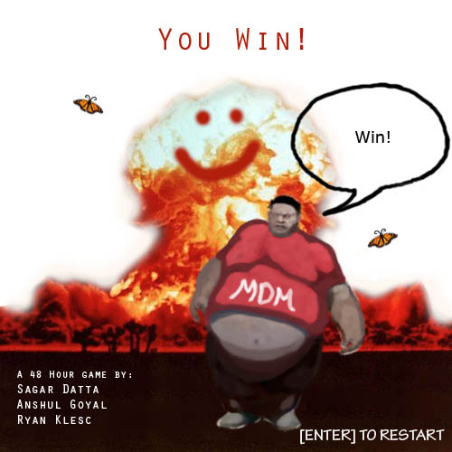

Fattie Butterfly Hunt Look and Feel
Fattie's Butterfly Hunt
About the Game
Fattie's Butterfly Hunt was created as part of a 48 hour Design Jam at the Center for Digital Media. Our task was to create a working game within the 48 hour time limit considering the theme, "I dreamed a thousand new paths, I woke and walked my old one" and using at least one "pallindrome, serrated and plump".
The game involve total five levels and the objective is to collect 50 butterflies in 40 seconds. The rare pink butterfly, if picked, will give an extra 10 seconds.
Duration: 2 Days
Team Size: 3
Click here to download the game.
Note: When running the swf file in flash player, if it appears too much zoomed out, click the 'View' menu and hit '100%'.
My Role & Responsibility
As a team member, I
Achievement


